| Título del proyecto | Wayra Academy — Plataforma Web de Experiencias Interactivas de aprendizaje |
| Docente(s) | [PENDIENTE: nombre del docente] |
| Sección / turno | [PENDIENTE] |
| Equipo / grupo | [PENDIENTE: nombre o número del grupo] |
| Fecha de entrega | [PENDIENTE: DD/MM/AAAA] |
| Aplicación desplegada | https://wayra.tsdfact.com/ |
| Repositorio | https://github.com/jtesen00/DesarrolloWebFullStack |
| N.º | Apellidos y nombres | Código | Responsabilidad principal |
|---|---|---|---|
| 1 | Chauca, Jhordi [completar] | [PENDIENTE] | [PENDIENTE] |
| 2 | Tesen Tantachuco, José Antonio | [PENDIENTE] | [PENDIENTE] |
| 3 | [PENDIENTE: integrante con usuario Git «azrahel98»] | [PENDIENTE] | [PENDIENTE] |
| 4 | [PENDIENTE o eliminar fila] | ||
| 5 | [PENDIENTE o eliminar fila] |
Semestre académico 2026-2
Muchas personas en el Perú quieren aprender tecnología, diseño o negocios digitales, pero no saben por qué curso empezar ni cómo se enseña antes de pagar. Wayra Academy es una aplicación web de una sola página (SPA) construida con React 19, Vite 8 y React Router 7 que ayuda a ese público —estudiantes, egresados y trabajadores que buscan reconvertirse— a explorar un catálogo de 16 cursos, ver una clase muestra gratuita y obtener una ruta de aprendizaje personalizada.
El flujo principal del MVP es el asesor virtual: la persona responde seis preguntas y escribe su nombre; la aplicación valida el formulario, señala lo que falta y, sin recargar la página, recomienda un curso y un ritmo de estudio. Se complementa con un explorador de cursos con filtros en vivo y búsqueda que ignora tildes, una clase muestra en video con un monitor de tiempo de estudio, un tema claro/oscuro persistente y el modal accesible «Ingresar o registrarse» de la semana 7, implementado con el elemento <dialog> nativo.
En este hito la aplicación está publicada en https://wayra.tsdfact.com/. Lighthouse sobre la versión desplegada obtuvo 93/100/100/100 en móvil y 98/100/100/100 en escritorio (Rendimiento/Accesibilidad/Buenas prácticas/SEO). axe-core reportó 0 violaciones WCAG 2.2 AA en 5 rutas × tema claro/oscuro × móvil/escritorio, y los 8 casos de prueba manuales y automatizados con teclado pasaron. Durante la validación se detectaron y corrigieron dos fallos reales: rutas internas que devolvían 404 en el servidor y un botón del menú móvil que perdía su estilo. Los datos de cursos, instructores y fechas son de prueba.
| Elemento | Descripción del equipo |
|---|---|
| Nombre del proyecto | Wayra Academy («wayra» significa «viento» en quechua). |
| Problema o necesidad | Quien quiere aprender una habilidad digital enfrenta catálogos largos y genéricos: no sabe qué curso le corresponde según su nivel y tiempo disponible, ni cómo se enseña antes de inscribirse. |
| Público objetivo | Jóvenes y adultos peruanos (estudiantes, egresados, trabajadores y emprendedores) que buscan su primer empleo en tecnología, mejorar en su trabajo o emprender. Incluye usuarios de teclado y lector de pantalla y usuarios que navegan desde el celular. |
| Objetivo general | Ofrecer una SPA accesible y responsive que permita explorar el catálogo, probar una clase gratuita y recibir una ruta de aprendizaje personalizada en pocos pasos y sin recargar la página. |
| Propuesta de valor | Recomendación personalizada en menos de un minuto (asesor virtual), clase muestra sin registro ni tarjeta, búsqueda tolerante a tildes, tema claro/oscuro y una interfaz usable por completo con teclado. |
| N.º | Funcionalidad | Estado | Evidencia o ruta |
|---|---|---|---|
| 1 | Asesor virtual (flujo principal): 6 preguntas + nombre, validación con mensajes en español, foco al primer campo inválido y ruta recomendada (curso + ritmo) sin recargar. | Completa | /asesor-virtual · src/paginas/AsesorVirtual.jsx · Fig. 4, 5 · CP-01 |
| 2 | Explorador de cursos: filtros por categoría, nivel y duración; búsqueda sin tildes; contador de resultados anunciado (role="status"); «Limpiar filtros» devuelve el foco; enlace profundo ?curso=id; carga simulada con esqueletos. | Completa | /explorador-cursos · ExploradorCursos.jsx, TarjetaCurso.jsx · Fig. 2, 6 · CP-02 |
| 3 | Modal accesible «Ingresar o registrarse» (semana 7): <dialog> nativo con showModal(), cierre con Esc, botón ✕, «Entendido» o clic en el velo; el foco vuelve al botón que lo abrió. | Completa | Botón «Ingresar» en todas las páginas · ModalAcceso.jsx · Fig. 7 · CP-03, CP-04 |
| 4 | Clase muestra + monitor de estudio: video con controles nativos; monitor con Activar/Detener/Reiniciar (setInterval con cleanup). | Completa | /clase-muestra · ClaseMuestra.jsx, Monitor.jsx · Fig. 3 · CP-06 |
| 5 | Portada: hero, cifras animadas, mosaico de cursos destacados, carrusel accesible con teclado, cuenta regresiva al próximo inicio. | Completa | / · Inicio.jsx, Carrusel.jsx, CuentaRegresiva.jsx · Fig. 1, 9 |
| 6 | Tema claro/oscuro persistente en localStorage, sincronizado entre pestañas, sin parpadeo en la primera carga. | Completa | useTema.js, BotonTema.jsx · Fig. 12 |
| 7 | Navegación SPA accesible: enlace «Saltar al contenido», enlace activo, menú móvil, foco al <h1> al cambiar de ruta, página 404. | Completa | Layout.jsx, Encabezado.jsx, NoEncontrada.jsx · CP-05, CP-07 |
| 8 | Registro e inicio de sesión reales. | No implementada | El modal informa que el registro abre con la próxima fecha de inicio. Planificado (ver 2.2). |
El MVP es la base del proyecto semestral. Las siguientes capacidades no están implementadas todavía y se incorporarán según la secuencia de los sílabos:
useCargaSimulada (solo cambia el cuerpo del hook) y registro/inicio de sesión reales en el modal.React.lazy y caché larga de recursos con hash.El componente principal es App, que define las rutas con BrowserRouter. Todas las rutas comparten Layout, que contiene el encabezado, el pie y el modal, y muestra la página activa mediante <Outlet />.
App (BrowserRouter · Routes)
└── Layout estado: accesoAbierto · hooks: useTema, useAparicion
├── Encabezado props: oscuro, onAlternarTema, onAbrirAcceso
│ ├── Chakana · BotonTema (oscuro, onAlternar) · Boton
├── <Outlet /> → página según la ruta
│ ├── Inicio "/"
│ │ ├── ReproductorMuestra · CifraAnimada (valor, sufijo)
│ │ ├── CursoMosaico (curso, tono) · Carrusel (cursos, idTitulo)
│ │ └── CuentaRegresiva (inicios) · Boton
│ ├── ExploradorCursos "/explorador-cursos" · hook: useCargaSimulada
│ │ ├── CabeceraPagina (titulo, miga, children)
│ │ └── TarjetaCurso (curso, posicion) · Boton
│ ├── ClaseMuestra "/clase-muestra"
│ │ ├── CabeceraPagina · BloqueLateral (titulo, tono)
│ │ └── ListaLateral (elementos, numerada) · Monitor · Boton
│ ├── AsesorVirtual "/asesor-virtual"
│ │ └── CabeceraPagina · BloqueLateral · Saludo (nombre, mensaje)
│ └── NoEncontrada "*"
├── Pie
└── ModalAcceso props: abierto, onCerrar
| Concepto | Cómo se utiliza en el proyecto | Componente / archivo de evidencia |
|---|---|---|
| Componentes | 18 componentes funcionales reutilizables y 5 páginas. Cada uno tiene una responsabilidad: p. ej. Boton renderiza <Link>, <a> o <button> según reciba to, href u onClick, con el mismo estilo. | src/componentes/*.jsx, src/paginas/*.jsx |
| Props | ModalAcceso recibe abierto y onCerrar (el padre decide cuándo se abre); TarjetaCurso recibe el objeto curso y posicion; Encabezado recibe callbacks onAlternarTema y onAbrirAcceso; Saludo recibe nombre y mensaje. | Layout.jsx, ModalAcceso.jsx, TarjetaCurso.jsx, Saludo.jsx |
| Estado (useState / useRef) | accesoAbierto (modal); filtros categoria, nivel, duracion, busqueda; respuestas, errores y rutaCalculada del asesor; segundos/activo del monitor; actual del carrusel; oscuro del tema. La lista visible de cursos se deriva del estado en el render, sin duplicarla. useRef guarda el <dialog>, el campo de búsqueda (para devolverle el foco) y el formulario. | Layout.jsx, ExploradorCursos.jsx, AsesorVirtual.jsx, Monitor.jsx, Carrusel.jsx |
| Eventos e interacción | onChange en filtros, radios y nombre; onSubmit con preventDefault() y validación; onClick en botones, modal y tema; onKeyDown en el carrusel (flechas, Inicio, Fin); onClose/onPointerDown en el <dialog>. | AsesorVirtual.jsx, ExploradorCursos.jsx, Carrusel.jsx, ModalAcceso.jsx |
| Efectos (useEffect) | Ver tabla 3.2.1. Los efectos se usan solo para sincronizar con sistemas externos al render (DOM nativo, temporizadores, eventos del navegador). El cálculo de resultados y de la ruta no usa efectos: se hace en el render o en el manejador del evento. | Tabla 3.2.1 |
| Composición | Layout + <Outlet /> compone la estructura común; CabeceraPagina y BloqueLateral reciben contenido como children; el estado del modal vive en Layout y se comparte con Encabezado (abrir) y ModalAcceso (mostrar/cerrar) elevando el estado. | App.jsx, Layout.jsx, CabeceraPagina.jsx, BloqueLateral.jsx |
| Efecto | Dependencias | Finalidad | Cleanup |
|---|---|---|---|
ModalAcceso | [abierto] | Sincroniza la prop abierto con el <dialog> nativo (showModal()/close()). | No necesita: no crea temporizadores ni listeners propios. |
Monitor | [activo] | Mientras está activo, suma 1 s con setInterval y actualización funcional. | clearInterval: evita intervalos duplicados (StrictMode, reactivar). |
CuentaRegresiva | [proximo] | Actualiza la hora cada segundo hasta el próximo inicio. | clearInterval al salir de la página. |
useCargaSimulada | [datos, demora] | Simula la respuesta de un servidor con setTimeout. | clearTimeout: no actualiza un componente desmontado. |
useTema (2 efectos) | [oscuro] y [] | Refleja el tema en <html>; escucha storage para sincronizar pestañas. | removeEventListener("storage"). |
useAparicion, CifraAnimada | [clave] / [valor] | IntersectionObserver para animar al entrar en pantalla. | disconnect() y cancelAnimationFrame. |
Layout | [pathname, hash] | Al cambiar de ruta: subir arriba y mover el foco al <h1>. | No necesita (acción puntual). |
CabeceraPagina, Inicio, NoEncontrada | [titulo] / [] | Actualizan document.title por página. | No necesita. |
ExploradorCursos | [cargando, cursoPedido] | Con ?curso=id abre el temario de ese curso y lo desplaza a la vista. | No necesita. |
Fragmento clave (efecto con cleanup del monitor de estudio):
useEffect(() => {
if (!activo) return; // detenido: no se crea intervalo
const intervalo = setInterval(() => setSegundos((previo) => previo + 1), 1000);
return () => clearInterval(intervalo); // al detener, salir o re-ejecutar
}, [activo]);
src/ ├── App.jsx · main.jsx · estilos.css enrutador, entrada (StrictMode) y sistema de diseño ├── componentes/ 18 componentes reutilizables (Boton, ModalAcceso, Monitor, Carrusel…) ├── paginas/ 5 vistas, una por ruta (Inicio, ExploradorCursos, ClaseMuestra, AsesorVirtual, NoEncontrada) ├── hooks/ useCargaSimulada, useTema, useAparicion └── datos/ cursos.js — 16 cursos de prueba, categorías, niveles y fechas de inicio public/ .htaccess (rutas SPA en Apache), img/, media/clase-muestra.mp4, robots.txt
TarjetaCurso.jsx); hooks con prefijo use; CSS con metodología BEM (.curso__titulo, .boton--primario) y tokens de diseño en variables CSS, redefinidos para el tema oscuro.Boton para enlaces internos, externos y acciones; CabeceraPagina y BloqueLateral compartidos por las páginas internas; datos centralizados en datos/cursos.js.<dialog> nativo en lugar de un modal hecho con div (el navegador aporta foco atrapado, Esc e inertidad del fondo); estado mínimo y valores derivados (el carrusel guarda un solo número); validación con la Constraint Validation API; animaciones como mejora progresiva que se desactivan con «reducir movimiento».Capturas tomadas el 24/10/2026 sobre la versión desplegada (https://wayra.tsdfact.com/).
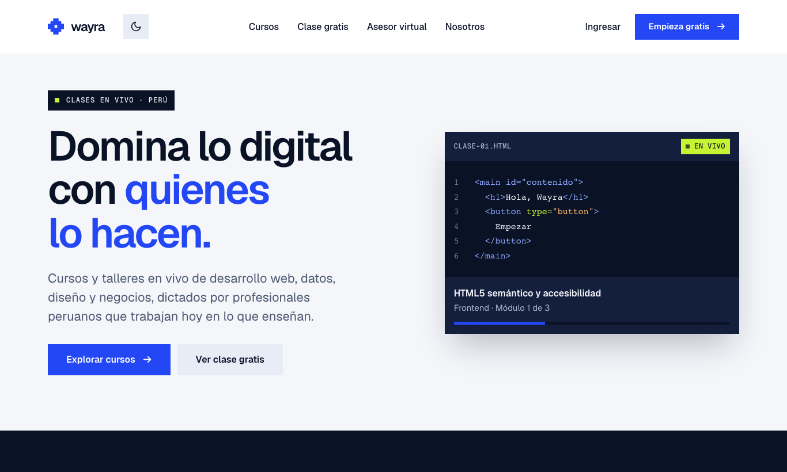
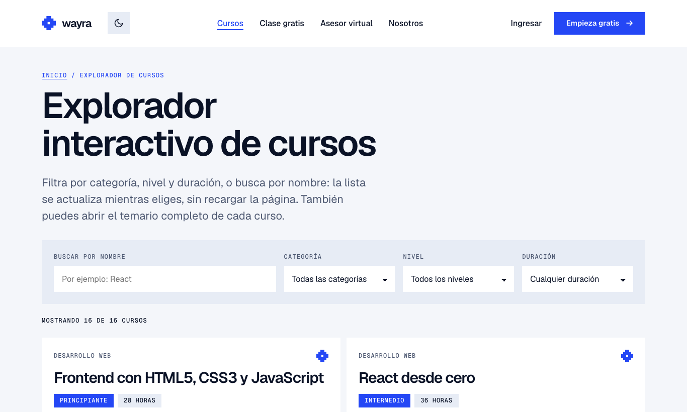
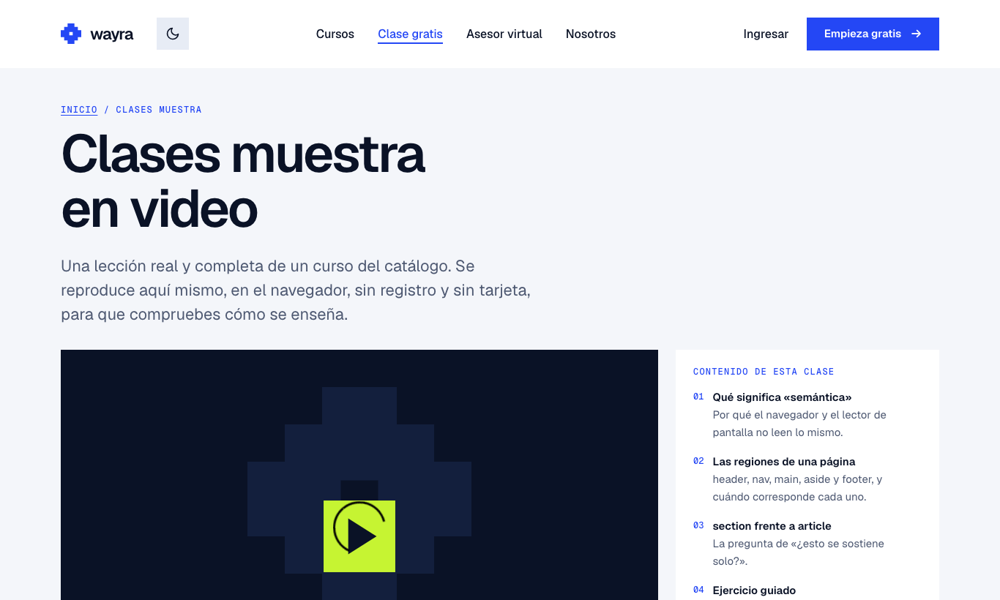
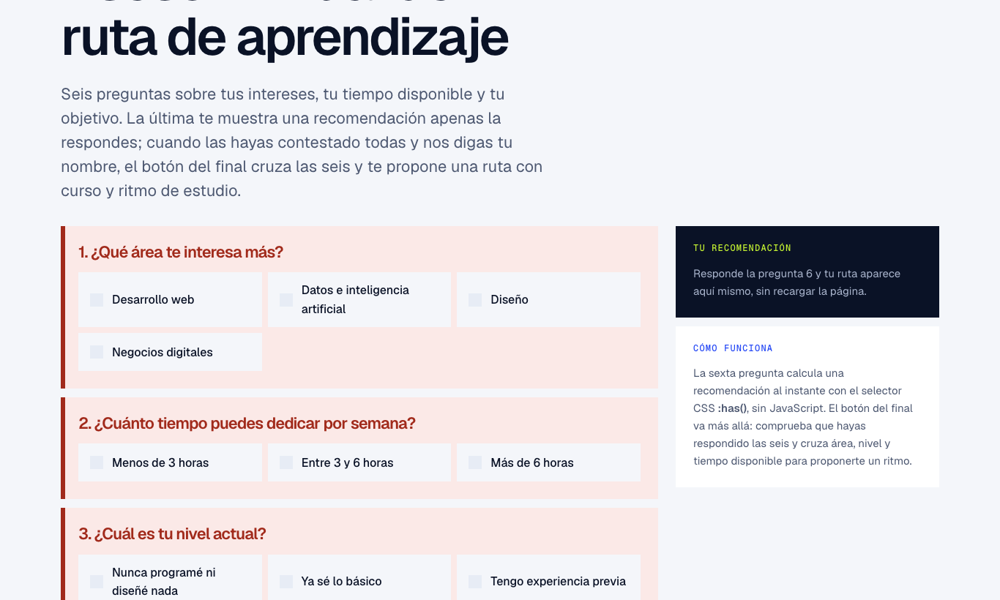
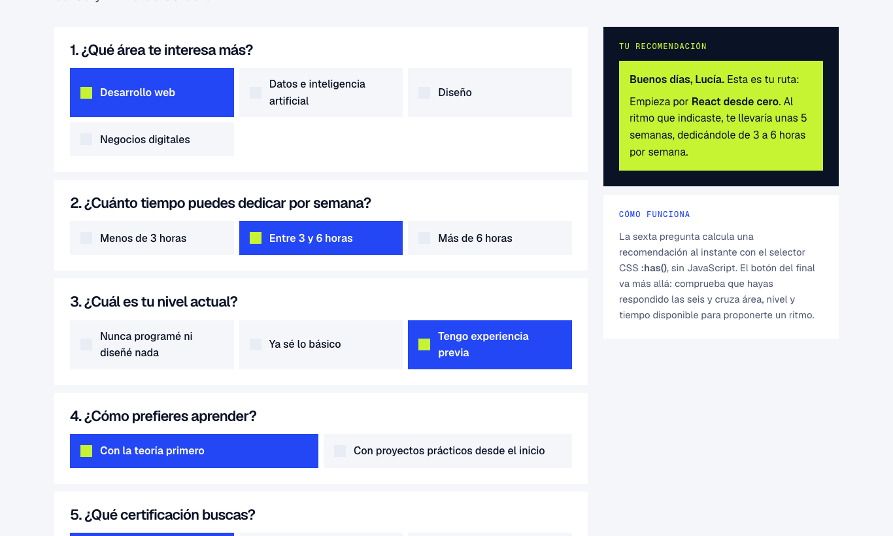
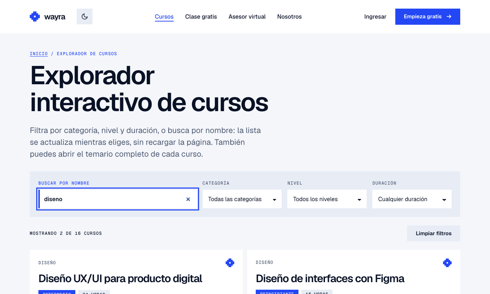
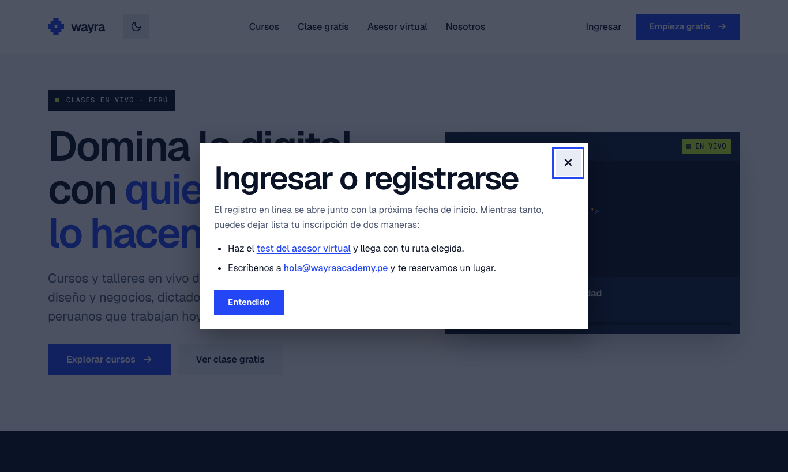
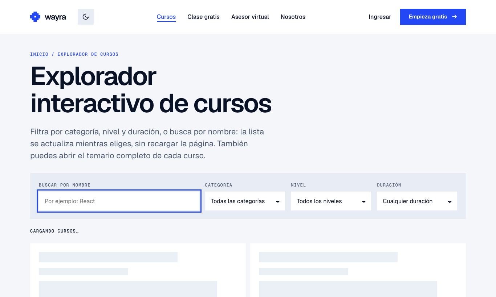
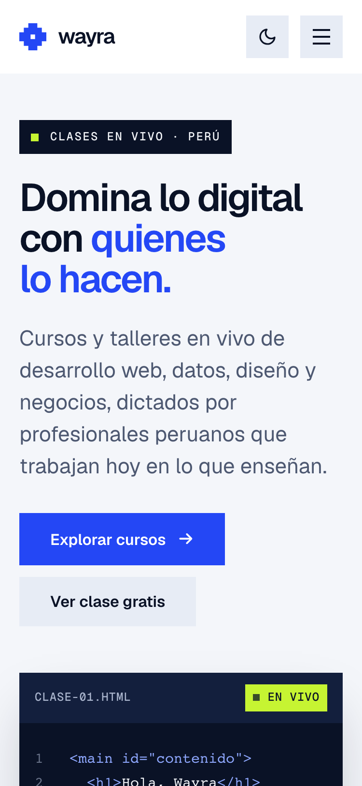
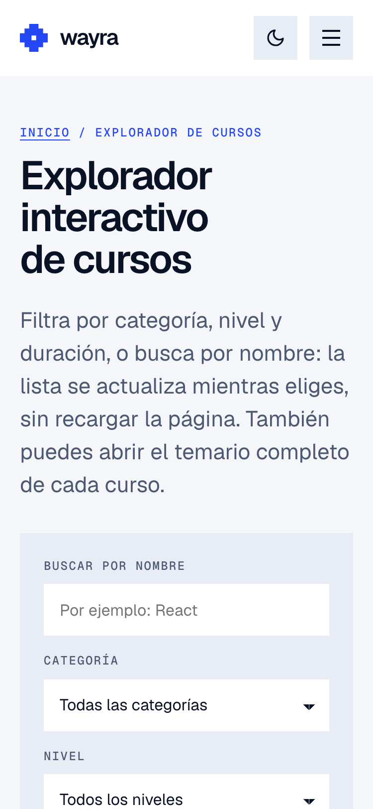
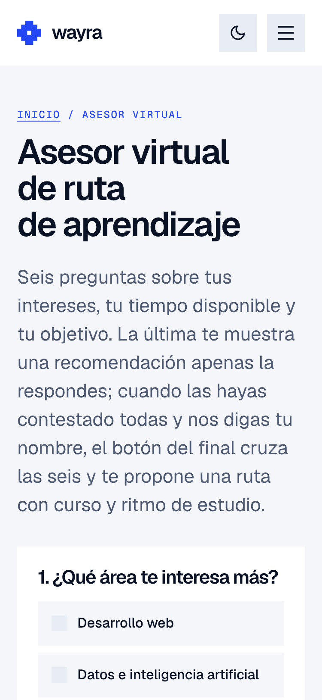
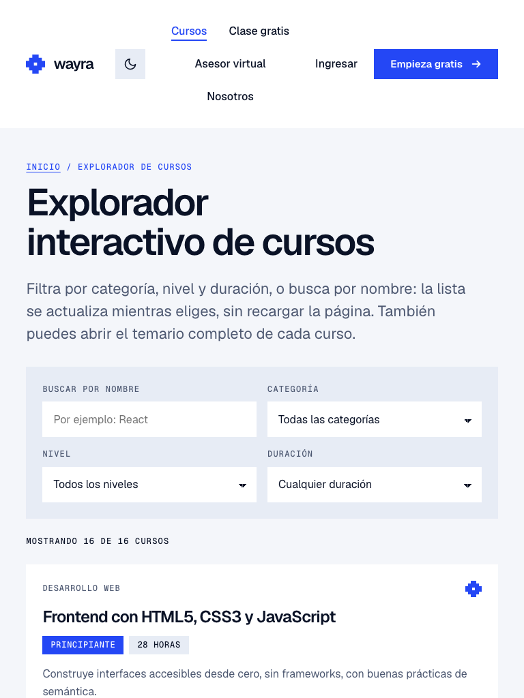
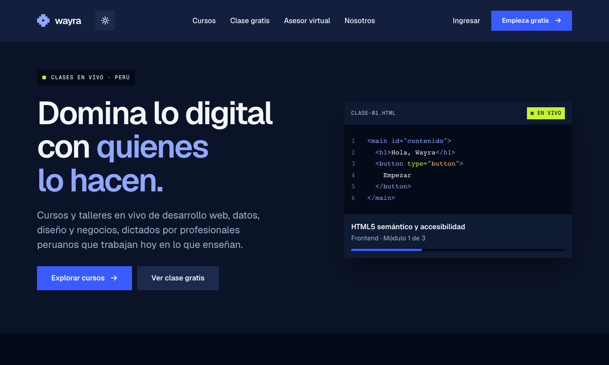
Se revisaron las 4 rutas principales en tres anchos midiendo desbordamiento horizontal (scrollWidth − clientWidth), tamaño mínimo de texto y controles.
| Dispositivo / tamaño probado | Resultado observado | Ajustes realizados |
|---|---|---|
| Móvil (375 × 812, táctil) | 0 px de desborde en las 4 rutas. Menú hamburguesa operativo. Texto mínimo de 12 px (solo etiquetas en mayúsculas y monoespaciada). Fallo: dentro del menú abierto, el botón «Empieza gratis» se veía como texto plano, sin fondo azul (Fig. 13a). | Se corrigió la regla CSS que lo pisaba (ver sección 8, dificultad 2). Verificado en la compilación local (Fig. 13b): fondo rgb(36,71,245) y texto blanco. Pendiente subir al servidor. |
| Tableta (768 × 1024) | 0 px de desborde. La navegación pasa a horizontal; tarjetas en 2 columnas; columna lateral bajo el contenido. | Ninguno necesario. |
| Escritorio (1366 × 820) | 0 px de desborde. Diseño a dos columnas (contenido + lateral) en Clase muestra y Asesor; la recomendación del asesor queda fija a la vista. | Ninguno necesario. |
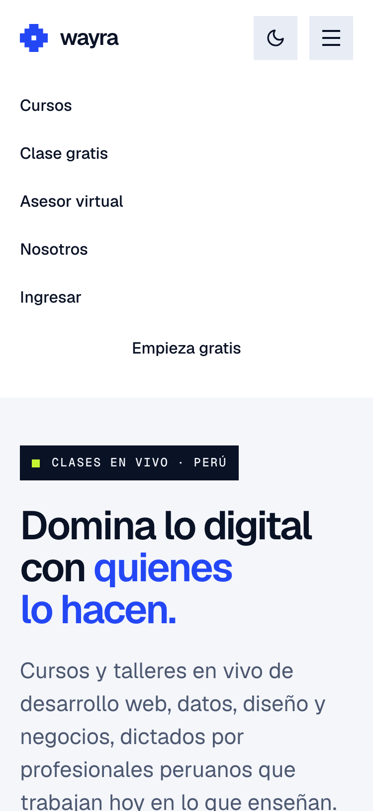
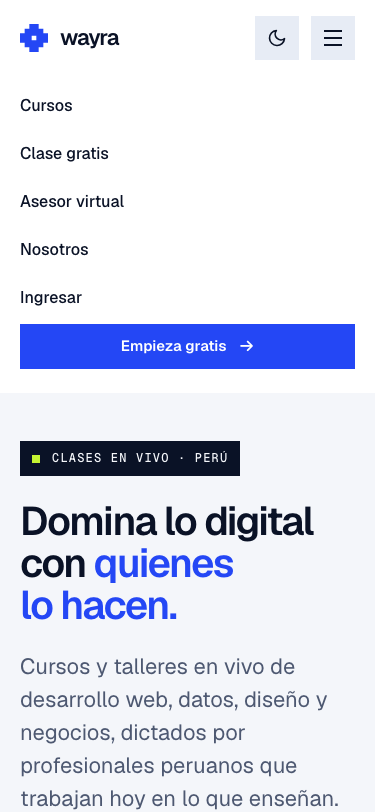
| Verificación | Resultado / evidencia | Mejora pendiente |
|---|---|---|
| Uso de etiquetas y estructura semántica | Regiones header, nav (con aria-label), main#contenido, aside y footer; un <h1> por página. Todos los campos tienen <label>; las preguntas del asesor son role="group" con aria-labelledby; el error del nombre se asocia con aria-describedby y aria-invalid; los avisos dinámicos usan role="status". axe-core: 0 violaciones. | Usar <fieldset>/<legend> nativos en las preguntas del asesor en lugar de role="group". |
| Contraste y legibilidad | axe-core (regla color-contrast, WCAG 2.2 AA) sin fallos en tema claro y oscuro. Lighthouse Accesibilidad 100 en móvil y escritorio. | Revisar el contraste del botón del menú móvil en producción tras subir la corrección. |
| Navegación por teclado / foco visible | Primer Tab → «Saltar al contenido principal». Modal: Tab + Enter abre, el foco entra al modal, Esc cierra y el foco vuelve a «Ingresar» (CP-03). Carrusel con flechas, Inicio y Fin. Al cambiar de ruta, el foco pasa al <h1>. Contorno de foco visible en todos los controles (Fig. 7 y 8). | Repetir la prueba con un lector de pantalla real (VoiceOver o NVDA). |
| Texto alternativo para imágenes relevantes | No hay <img> de contenido. Los SVG decorativos (logo Chakana, iconos de tema) llevan aria-hidden="true"; la maqueta del reproductor tiene aria-label descriptivo; el video tiene poster y un enlace alternativo de descarga. | Agregar subtítulos (<track kind="captions">) al video de la clase muestra. |
Pruebas ejecutadas el 24/10/2026 sobre https://wayra.tsdfact.com/ con Google Chrome, controlado con Playwright para repetir exactamente las mismas pulsaciones de teclado y clics. Los resultados crudos están en docs/evidencias-parcial/resultados.json. No hubo errores en la consola del navegador.
| Caso | Procedimiento | Resultado esperado | Resultado obtenido |
|---|---|---|---|
| CP-01a | En /asesor-virtual, pulsar «Ver mi ruta completa» sin responder nada. | No se envía; se avisa qué falta y el foco va al primer campo inválido. | Pasa. Aviso: «Te falta completar las preguntas 1, 2, 3, 4, 5, 6 y tu nombre.» Foco en el primer radio. (Fig. 4) |
| CP-01b | Responder las 6 preguntas (Desarrollo web, 3–6 h, con experiencia…), escribir «Lucía» y enviar. | Se muestra la ruta personalizada sin recargar. | Pasa. «Buenos días, Lucía. Empieza por React desde cero… unas 5 semanas, dedicándole de 3 a 6 horas por semana.» (Fig. 5) |
| CP-02 | En /explorador-cursos: elegir la categoría Diseño; volver a Todas; buscar «diseno»; pulsar «Limpiar filtros». | La lista y el contador se actualizan en vivo; la búsqueda ignora tildes; al limpiar se ven los 16 cursos y el foco vuelve al buscador. | Pasa. Diseño: «Mostrando 3 de 16». «diseno»: 2 cursos (Diseño UX/UI…, Diseño de interfaces con Figma). Limpiar: «Mostrando 16 de 16», foco en #busqueda-curso. (Fig. 6) |
| CP-03 | En la portada, solo con teclado: Tab hasta «Ingresar», Enter; recorrer con Tab; pulsar Esc. | El modal se abre, el foco entra y no cae en el contenido de detrás; Esc cierra y el foco vuelve a «Ingresar». | Pasa. 8 Tab hasta «Ingresar». Foco inicial en «Cerrar ventana». Orden: ✕ → «test del asesor virtual» → correo → «Entendido» → barra del navegador → ✕ (comportamiento nativo de showModal(): la página de fondo es inerte). Esc cierra; foco en «Ingresar». (Fig. 7) |
| CP-04 | Abrir el modal con Enter, enfocar «Entendido» y pulsar Espacio. | El modal se cierra. | Pasa. |
| CP-05 | Cargar la portada, pulsar Tab y Enter; luego ir a «Cursos». | El primer Tab ofrece «Saltar al contenido»; al navegar, el foco pasa al título de la nueva página. | Pasa. Enter lleva a #contenido; tras «Cursos» el foco queda en el h1 «Explorador interactivo de cursos». (Fig. 8) |
| CP-06 | En /clase-muestra: Activar 3 s; Detener 2 s; Activar–Detener–Activar rápido y esperar 2 s. | Cuenta 1 por segundo, se detiene y no se acelera al reactivar (cleanup correcto). | Pasa. 3 s → «3 s registrados»; detenido sigue en 3 s; tras reactivar y esperar 2 s: 5 s (+2, sin aceleración). |
| CP-07 | Abrir /asesor-virtual directamente en la barra de direcciones y recargar (F5). | Responde 200 y carga la página correcta. | Pasa tras subir .htaccess. Antes de la corrección respondía 404 (ver sección 8, dificultad 1). |
| CP-08 | Auditoría axe-core 4.10 (WCAG 2 A/AA, 2.1 AA, 2.2 AA y buenas prácticas) en 5 rutas × tema claro/oscuro × móvil/escritorio (20 combinaciones). | Sin violaciones. | Pasa. 0 violaciones en las 20 combinaciones. |
Problemas detectados durante las pruebas: (1) rutas internas con 404 al abrirlas directamente o al recargar — corregido y verificado en producción; (2) botón «Empieza gratis» sin estilo en el menú móvil — corregido en el código y verificado en local, falta publicarlo.
URL auditada: https://wayra.tsdfact.com/
Fecha de auditoría: 24/10/2026 (10:20 y 10:32 hora de Lima)
Entorno/dispositivo: Lighthouse 12.2.1 con Google Chrome sin interfaz (headless) en macOS. Perfil móvil: emulación de Moto G Power con red 4G lenta y CPU 4× más lenta. Perfil escritorio: preset desktop. Reportes completos en docs/lighthouse/.
| Categoría | Puntuación (móvil / escritorio) | Hallazgo relevante | Acción o mejora |
|---|---|---|---|
| Rendimiento | 93 / 98 1.ª medición: 89 / 99 | Móvil: FCP 2,0 s, LCP 2,9 s, TBT 10 ms, CLS 0. «Reduce unused JavaScript»: ~47 KiB sin usar en index-*.js (95 KiB comprimido). «Serve static assets with an efficient cache policy»: 2 recursos. | Dividir el bundle por ruta con React.lazy + Suspense; ampliar la caché de /assets/ a 1 año (Hallazgos 1 y 2). |
| Accesibilidad | 100 / 100 | Sin fallos automáticos. Confirmado por axe-core (0 violaciones) y por las pruebas manuales de teclado CP-03 a CP-05. | Mantener; agregar subtítulos al video y probar con lector de pantalla. |
| Buenas prácticas | 100 / 100 | HTTPS, sin errores en consola y sin APIs obsoletas. | Mantener. |
| SEO (si aplica) | 100 / 100 | lang="es-PE", meta description, título por página, robots.txt válido. | Mantener. |
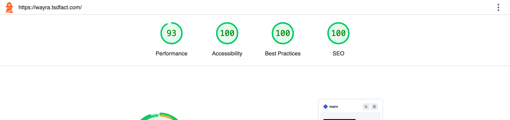
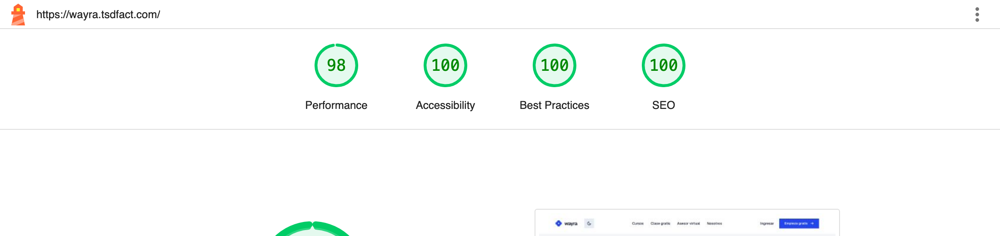
Qué dice: de los 95 KiB comprimidos del archivo index-*.js, unos 47 KiB no se ejecutan al cargar la portada. Por qué ocurre: Vite genera un solo bundle con las 5 páginas; quien entra a la portada también descarga el código del asesor virtual (529 líneas), del explorador y de la clase muestra. Impacto: en móvil con red lenta retrasa la primera pintura (FCP 2,0–2,9 s); es la principal causa de que Rendimiento no llegue a 100. Plan: cargar cada página con React.lazy(() => import("./paginas/AsesorVirtual.jsx")) dentro de <Suspense>, de modo que Vite cree un archivo por ruta. Se implementará en la semana de optimización y Core Web Vitals.
Qué dice: los archivos /assets/index-*.js e index-*.css deberían guardarse en caché por más tiempo. Antes: en la primera medición (10:20) el servidor los entregaba con una caché de solo ~10 s, así que una visita repetida los volvía a pedir. Después: tras la configuración en el servidor, la segunda medición (10:32) muestra Cache-Control: max-age=604800 (7 días) y el Rendimiento móvil subió de 89 a 93 (FCP de 2,9 s a 2,0 s; parte de la variación se debe a la red). Pendiente: como Vite agrega un hash al nombre de cada archivo y este cambia en cada compilación, es seguro guardarlos un año con immutable. Se añadirá al .htaccess:
<FilesMatch "^index-.*\.(js|css)$"> Header set Cache-Control "public, max-age=31536000, immutable" </FilesMatch>
| Recurso | Enlace / información |
|---|---|
| Repositorio Git | https://github.com/jtesen00/DesarrolloWebFullStack |
| Aplicación desplegada | https://wayra.tsdfact.com/ (hosting propio con Apache; abre sin iniciar sesión) |
| Rama / versión entregada | Rama react-rediseno-v3. Versión desplegada al momento de la auditoría: commit b5d25a9 («Rediseño v3 (Tech)…», 23/10/2026). [PENDIENTE: hash del commit final que incluye .htaccess y la corrección del menú móvil] |
| Instrucciones para ejecutar localmente | Requisitos: Node.js 20 o superior y npm.git clone https://github.com/jtesen00/DesarrolloWebFullStack.gitcd DesarrolloWebFullStack · git checkout react-rediseno-v3npm install → npm run dev (abre http://localhost:5173)Producción: npm run build genera dist/ (incluye .htaccess); npm run preview la sirve en local. |
| Dependencias principales | react 19.3, react-dom 19.3, react-router-dom 7.18; desarrollo: vite 8.3, @vitejs/plugin-react 6.1. Sin dependencias de UI externas. Fuentes Geist y Geist Mono (Google Fonts). |
| Despliegue | Se compila con npm run build y se sube el contenido de dist/ a la raíz del dominio. El archivo .htaccess redirige toda ruta que no sea un archivo real a index.html para que React Router la resuelva. |
Causa: la aplicación usa BrowserRouter, que cambia la URL (/asesor-virtual) sin pedir una página nueva. Al navegar con clics funcionaba, pero al abrir un enlace directo o recargar, Apache buscaba un archivo asesor-virtual que no existe y respondía 404. Solución: se creó public/.htaccess con mod_rewrite para servir index.html en cualquier ruta que no sea un archivo o carpeta real; Vite lo copia a dist/. Verificado: las 4 rutas y una inexistente responden 200 y la app muestra la página o el 404 propio. Aprendizaje: una SPA necesita configurar el servidor; probar solo navegando con clics oculta el problema.
Causa: especificidad CSS. La regla .navegacion__lista a (clase + elemento) quitaba el fondo a todos los enlaces del menú y ganaba a .boton--primario (solo clase), así que el botón —que es un <a>— quedaba sin fondo azul. Solo se veía en móvil, porque en escritorio ese botón está fuera del menú. Solución: excluir los botones de las reglas de enlaces del menú con .navegacion__lista a:not(.boton). Verificado en la compilación local (Fig. 13b). Aprendizaje: revisar cada vista en móvil con el menú abierto, no solo la página.
<dialog> nativo con el estado de ReactCausa: React controla si el modal está abierto (prop abierto), pero el <dialog> se abre con el método imperativo showModal() y puede cerrarse solo con Esc. Además, seleccionar texto dentro del panel y soltar el mouse fuera lo cerraba por error. Solución: un useEffect con dependencia [abierto] sincroniza ambos mundos; onClose avisa a React cuando el navegador lo cierra; un useRef recuerda si el pointerdown empezó sobre el velo y solo entonces se cierra. Aprendizaje: useEffect es para sincronizar React con sistemas externos al render, y el elemento nativo da gratis el foco atrapado y el cierre con Esc.
Causa: StrictMode monta los efectos dos veces en desarrollo y, sin limpieza, quedaban dos setInterval sumando a la vez. Solución: devolver clearInterval en el efecto y usar la forma funcional setSegundos(p => p + 1). CP-06 confirma que no se acelera.
| Mejora / funcionalidad pendiente | Prioridad | Semana prevista | Responsable(s) |
|---|---|---|---|
Publicar la corrección del menú móvil y la caché de 1 año en .htaccess | Alta | 9 | [Integrante] |
| Animaciones de rutas y del modal con Framer Motion (respetando «reducir movimiento») | Media | 9–10 | [Integrante] |
| Estado global con Zustand: favoritos y «mi ruta» guardada | Alta | 10–11 | [Integrante] |
| Tiempo real con WebSockets: preguntas en vivo en la clase y aviso de cupos | Media | 12–13 | [Integrante] |
Optimización: React.lazy por ruta y medición de Core Web Vitals | Media | 13–14 | [Integrante] |
| Pruebas automatizadas (Vitest + Testing Library) y despliegue continuo | Media | 14–15 | [Integrante] |
| Subtítulos del video y prueba con lector de pantalla | Baja | 15–16 | [Integrante] |
Layout + Outlet, componentes pequeños con props claras y estado mínimo con valores derivados mantiene el código comprensible y fácil de ampliar; los efectos se limitan a sincronizar con el navegador y limpian sus temporizadores y listeners.| Integrante | Responsabilidad principal | Aporte realizado | Participación en exposición |
|---|---|---|---|
| Chauca, Jhordi | [PENDIENTE] | [PENDIENTE] (commits: Semanas 2, 3 y 4) | [Sí/No y sección] |
| Tesen Tantachuco, José Antonio | [PENDIENTE] | [PENDIENTE] (commits: repositorio inicial, semana 4, rediseño v3) | [Sí/No y sección] |
| [Integrante «azrahel98»] | [PENDIENTE] | [PENDIENTE] (commits: migración a React con Vite, laboratorio monitor/useRef) | [Sí/No y sección] |
| [Nombre] | [PENDIENTE] | [PENDIENTE] | [Sí/No y sección] |
| Estado | Ítem |
|---|---|
| ☐ | El informe está completo y no contiene marcadores pendientes entre corchetes. (faltan los datos del equipo y el video) |
| ☑ | El repositorio es accesible y contiene el código fuente. |
| ☑ | La aplicación desplegada abre y permite probar las funcionalidades declaradas. |
| ☑ | Se adjuntan capturas del MVP y evidencias de pruebas (Fig. 1–15, sección 5, docs/evidencias-parcial/). |
| ☑ | Se incluye el reporte Lighthouse (sección 6, docs/lighthouse/). |
| ☐ | Se incluye el enlace al video de exposición y se verifican sus permisos. |
| ☑ | Se describen las funcionalidades pendientes para la continuación del proyecto (2.2 y 9). |
| ☐ | Todos los integrantes y sus responsabilidades están identificados. |
Enlace al video de exposición: [PENDIENTE: pegar URL y verificar que sea visible sin pedir acceso]
Observaciones finales del equipo: Los cursos, instructores, fechas de inicio y el nombre «Lucía» usado en las pruebas son datos ficticios de prueba. La aplicación no recoge ni envía datos personales: el nombre del asesor solo se usa para mostrar la ruta en la misma página.
Confirmamos que la aplicación, el repositorio, el informe, las evidencias y el video corresponden al mismo proyecto integrador y que podemos explicar el código y las decisiones presentadas.
Integrantes: [PENDIENTE] Fecha de entrega: [PENDIENTE]